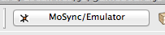
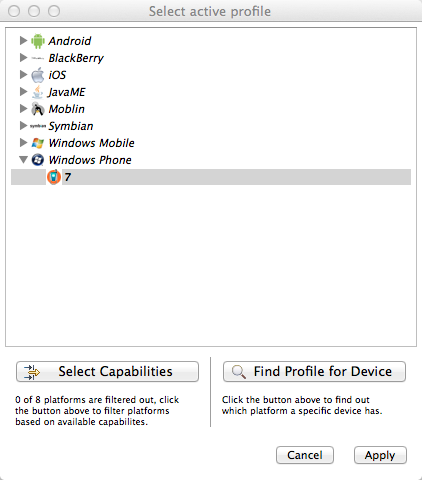
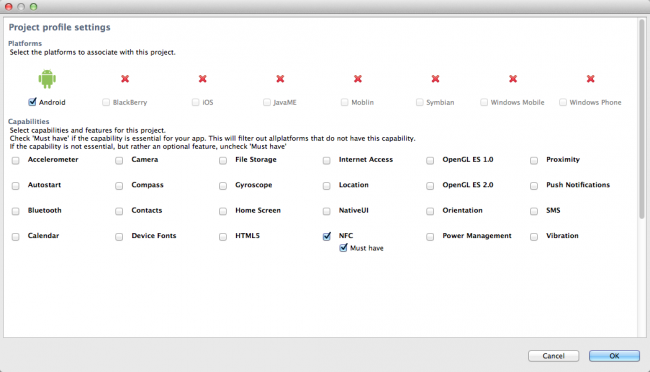
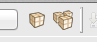
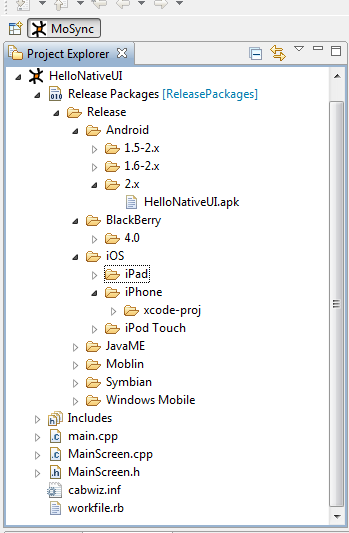
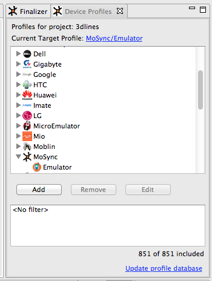
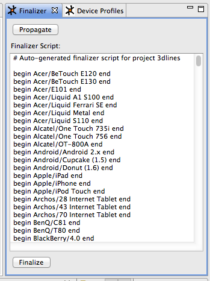

One of the MoSync SDK's great strengths is that you can use it to build your one application into the different packages you need for hundreds of mobile devices. The MoSync SDK builds the executable packages, ready to be transferred to the devices (or ready for finishing in Visual Studio and Xcode), based on the target platform/device profiles you have selected." title="<--break-->">
There are two ways in which the MoSync Finalizer can work:
If you have a project which is currently configured per device, and you wish to move to a per platform configuration, click the Profile Selection icon on the toolbar:

In the dialog that opens, click the Make Platform Based button.
When you are ready to finalize, click the Profile Selection icon in the toolbar. In the dialog that opens, click the Select Capabilities button:

Another dialog will show where you can choose which platforms you want to build for. You can do this quickly and easily by selecting which capabilities your target platforms have:

You can filter the list by selecting supported functions. Those platforms which don’t support that feature will be crossed out. You may also check/uncheck individual platforms.
To finalize, click the Build All toolbar icon (the rightmost icon below). The currently selected build configuration will be used during building.

The Finaliser invokes the MoSync Packager as many times as required. Once complete, you will find that your project now has a new folder called /Release Packages. This folder contains all the outputs from each platform. (iOS and Windows Phone 7 sometimes produces XCode and Visual Studio project, see the sections below for more options.)

If you build on a Mac with XCode installed, MoSync will try to build a deployable iOS application. However, in some cases an XCode project will be generated instead. This XCode project can be imported into XCode and the final app built from there.
If one of these conditions holds, then an XCode project will be built:
If you build on a Windows machine with Visual Studio installed, MoSync will try to build a deployable Windows Phone 7 application. However, in some cases a Visual Studio project will be generated instead. The generated project can be imported into Visual Studio and the final app built from there.
If one of these conditions holds, then a Visual Studio project will be built:
Finalizing projects with Device Profiles works slightly differently.
When you work with a project with device profiles, the Device Profiles and Finalizer tabs should open automatically. To open these tabs manually, select Window > Show View > Other... and select those views in the dialog that shows.
Before you finalize your application, it is worthwhile checking that the set of devices listed on the Device Profiles tab includes all the devices you want to build the final packages for. If it doesn't, adjust the device profile filters until it does. You can Add, Remove and Edit filters by pressing the corresponding buttons in the Device Profiles tab. (But don't worry if you can't get exactly the subset you want, you can adjust things later.)

When you are ready to finalize your application, click the Finalizer tab next to the Device Profiles tab.
Click the Propagate button. The MoSync IDE will generate a build script based on the devices listed in the Device Profiles tab. The script is editable so you can make changes such as adding device to it or removing devices from it. Click the Finalize button to start the build process. If you have selected many devices and you have a large project, this operation can of course take quite some time.
